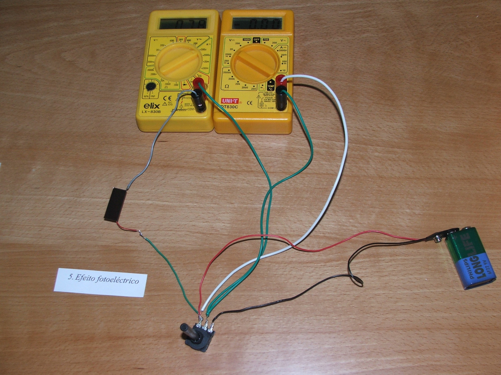

The photoelectric effect
Maxwell's theory of light, in which light is just an electromagnetic wave, opened up the possibility of producing other types of electromagnetic waves using electric circuits. The first person to succeed in that effort was Hertz, by the end of the XIX century. Ironically, while conducting the experiment that proved the existence of electromagnetic waves, leading to the end of the corpuscular theory of light, he accidentally discovered the effect that would later be used to revive that theory: while conducting his electromagnetic wave experiments, he noticed that light from a spark in a circuit could induce an electric current in another remote circuit used to detect the electromagnetic waves produced by the first.
A few years later when the electron was discovered by Thomson, it became clear that the effect observed by Hertz, dubbed as photoelectric effect, was due to some electrons being ejected from a metal when a light ray reaches its surface. The electromagnetic energy transported by light is absorbed by the electrons in the metal, allowing them to get free from the binding in the metal. The problem that nobody was able to explain by the beginning of the XX century was why the energy of the electrons ejected by photoelectric effect does not increase when the intensity of the incident light increases, but it does increase as the frequency of that light increases. In fact, for each metal there is a minimum frequency of light under which there is no photoelectric effect.
The energy of the electrons ejected by photoelectric effect can be measured if we connect an external voltage source to the photoelectric cell and adjust the source's voltage (opposed to the cell's voltage) until the current in the circuit vanishes.
In 1905, when there was no doubt about the wave theory of light, Einstein published a paper where he perfectly explained the photoelectric effect by assuming that light is composed of particles —photons— with energy directly proportional to the frequency of the light. In the theory of photons, the energy transported by light cannot be increased continuously but rather in discrete amounts, corresponding to 1 photon, 2 photons, 3 photons and so on. That theory also explained the success of Planck's hypothesis (1900) to explain the black-body radiation spectrum, under the assumption that the energy radiated by a black body could only take discrete values —quanta— of energy.
The work of Planck and Einstein would give rise to quantum physics, in which all physical objects are entities which are both particles and waves (wave-particle duality). Energy is transported from one place to another as waves, but that energy is emitted and absorbed in discrete amounts, as particles. Light, as well as any type of matter, is both a wave and a particle. That's the reality at the sub-microscopic level, but at the macroscopic level of our daily experience there seems to be a clear distinction among waves and particles.